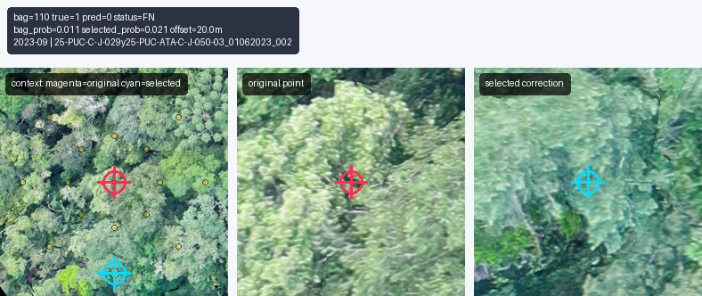
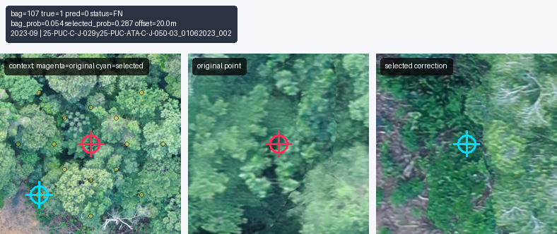
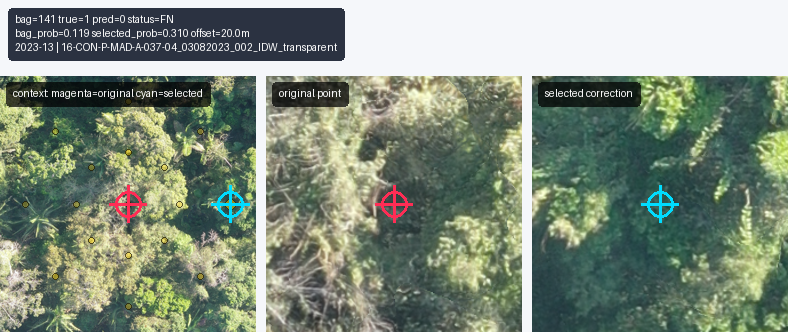
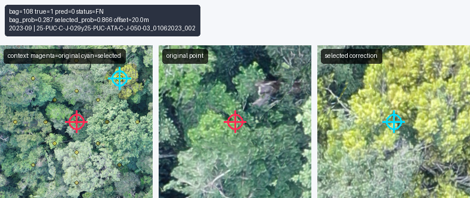
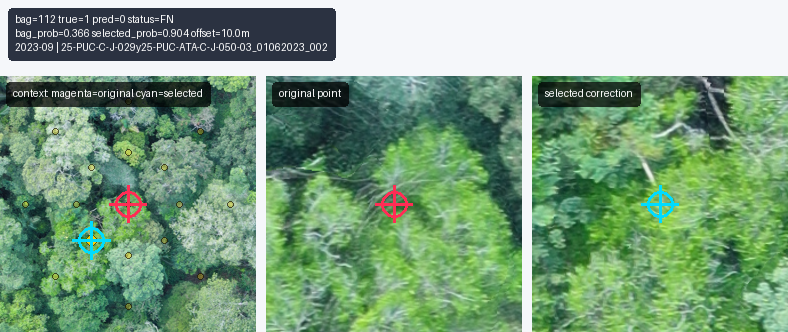
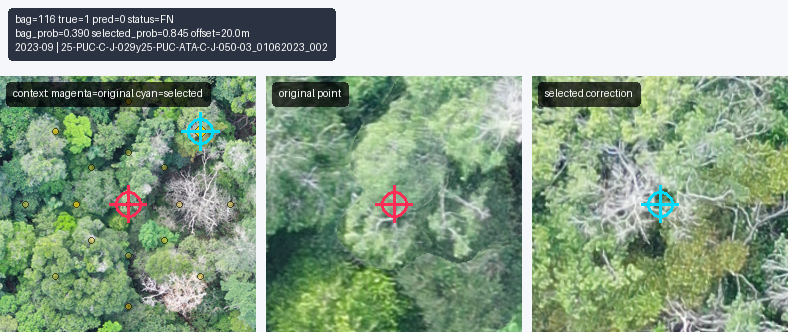
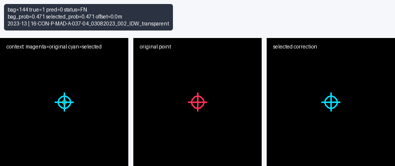

MIL Debug Patches
outputs/mil_dino_shared_seasonal_20m_rgb_green_mean_green_mean_cuda/pca_val_best/debug_false_negatives/images

bag 110 | FN | bag 0.011 | inst 0.021 | 20.0m
bag 107 | FN | bag 0.054 | inst 0.287 | 20.0m
bag 141 | FN | bag 0.119 | inst 0.310 | 20.0m
bag 108 | FN | bag 0.287 | inst 0.866 | 20.0m bag 154 | FN | bag 0.288 | inst 0.849 | 10.0m
bag 154 | FN | bag 0.288 | inst 0.849 | 10.0m bag 138 | FN | bag 0.366 | inst 0.889 | 20.0m
bag 138 | FN | bag 0.366 | inst 0.889 | 20.0m
bag 112 | FN | bag 0.366 | inst 0.904 | 10.0m
bag 116 | FN | bag 0.390 | inst 0.845 | 20.0m
bag 144 | FN | bag 0.471 | inst 0.471 | 0.0m